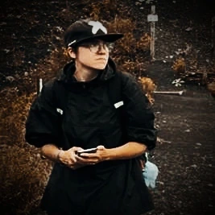

À propos de moi

Maryline Lesaffre 24 ans
07 69 56 17 06
maryline.lesaffre62@outlook.com
Actuellement en formation en dev web chez simplon, je cherche un stage afin de développer mes compétences et acquérir de l'expérience.
Compétences
Solft skills
- Créativité
- Autonomie
- Persévérance
- Sens de la concentration
- Capacité à travailler en équipe
Hard skills
- Programmation HTML/CSS
- Conception de maquettes web
Mad skills
Dessin et jeux vidéos (aventure, narratifs)
Expériences
Stage centre social
Chargé de communication numérique 15 avril au 15 mai 2024 Boulgne-Sur-Mer
Formation Cléa Numérique
Greta 2023 Boulogne-Sur-Mer
Formation Simplon
Intégrater développement web 1mars au 19 mars 2023 Boulogne-Sur-Mer